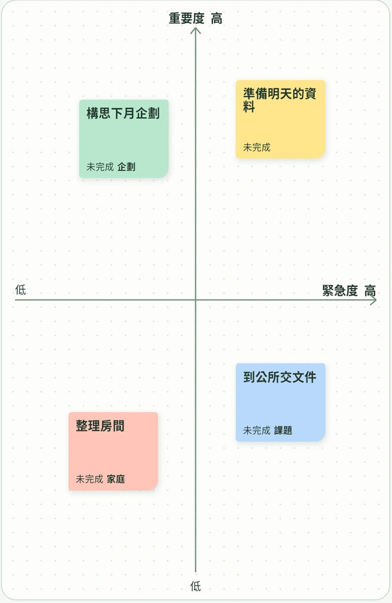
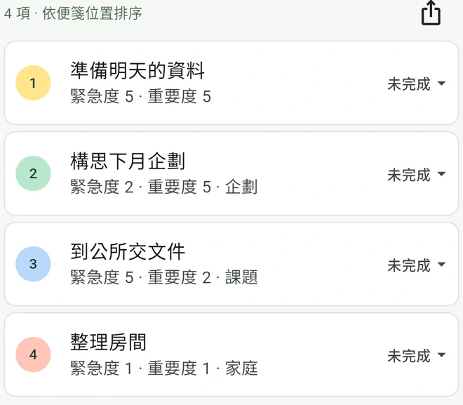

從便利貼到待辦清單
-
寫下要做的事
例如「準備明天的資料」。一件事寫在一張便利貼上。
-
把便利貼貼到看板上
緊急的往右放，重要的往上放。拖曳便利貼，就能對照其他任務調整位置。
-
查看待辦清單
清單會依照便利貼的位置自動排序。開始處理後，還能記錄進度。

常見問題
緊急度和重要度有什麼差別？
緊急度是指一件事需要多快處理；重要度是指它對結果或目標有多大的影響。例如，明天要用的資料可以放在右上角，下個月的重要企劃可以放在左上角。
待辦事項的優先順序是怎麼排的？
PetaTodo 會把便利貼位置對應的緊急度與重要度相加，總分越高越靠前。同分時，重要度較高的事項優先。拖曳看板上的便利貼即可更新排序。
需要註冊帳號嗎？
無需註冊就能使用。看板、便利貼與附件儲存在裝置上，PetaTodo 不會將這些資料傳送到外部伺服器。
可以怎麼整理和匯出待辦？
可以用顏色與標籤分類，在便利貼中加入有格式的備註和多個附件。進度分為「未完成」「進行中」「已完成」，已完成的事項會保留在待辦清單中。待辦清單可匯出為 CSV、PDF 或 PNG，看板可匯出為 PDF 或 PNG。